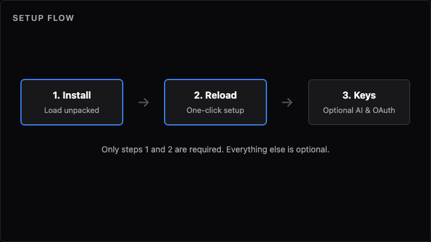
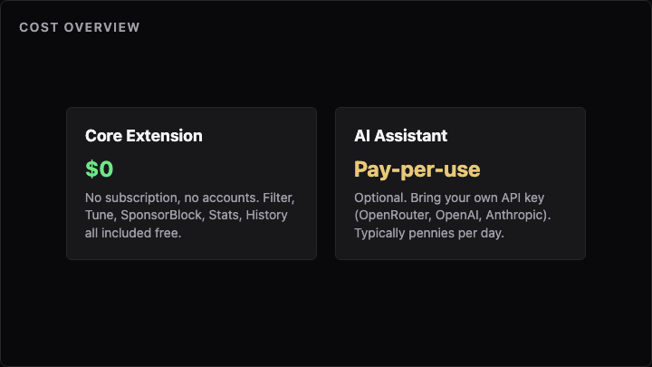
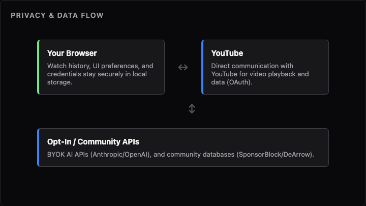
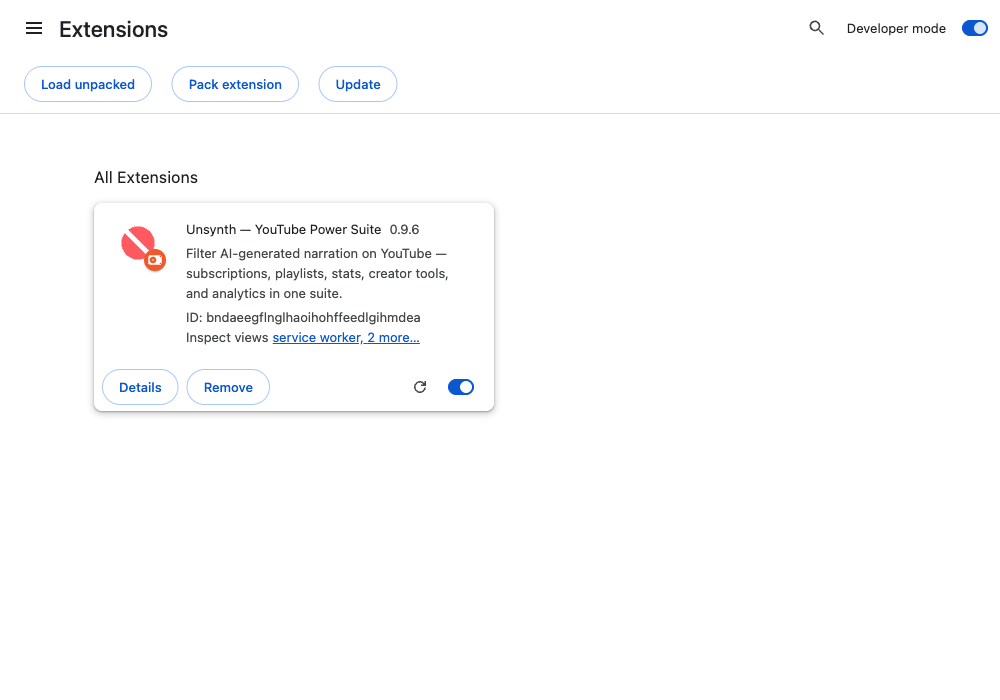
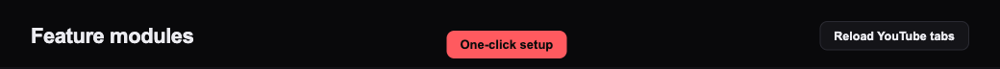
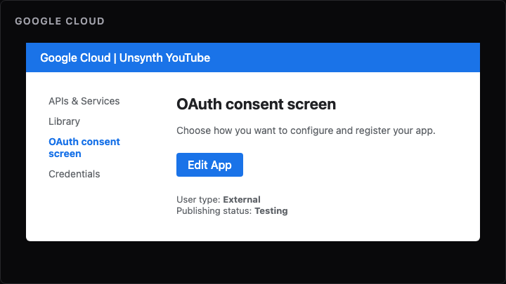
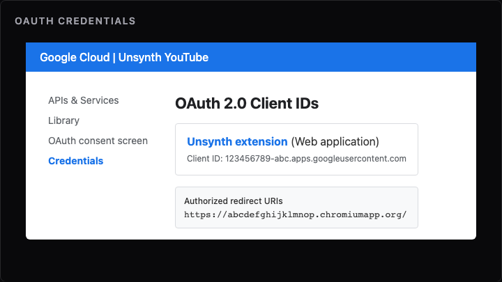
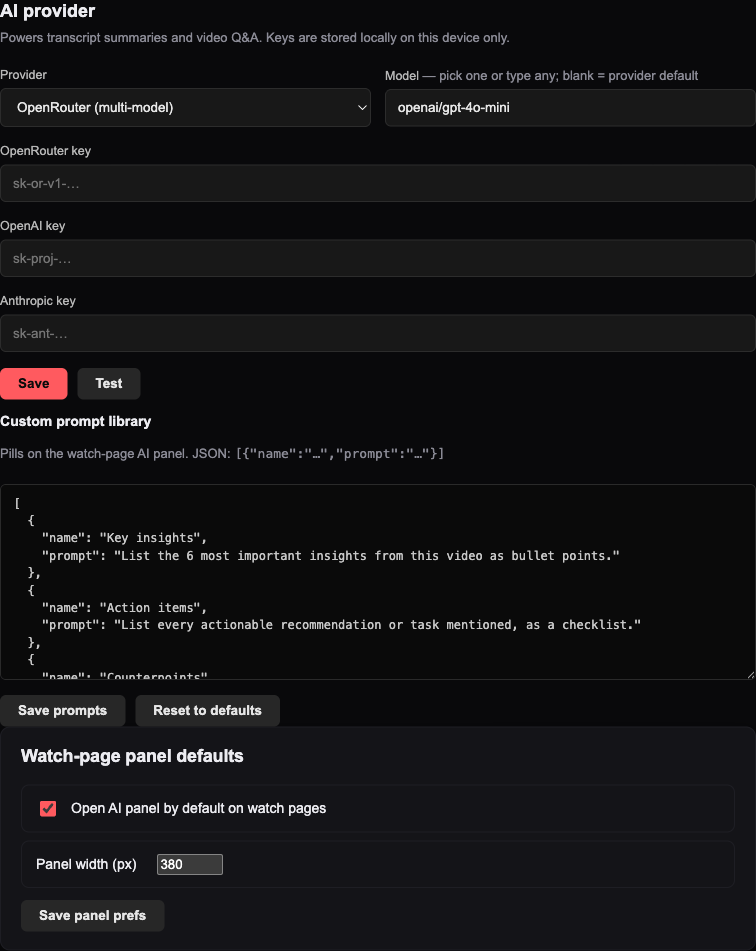

Setup flow — only steps 1–2 are required; everything else is optional.
| Do now | Skip until asked |
|---|---|
| Install extension | Google OAuth — subs, playlist API, Forge writes |
| Reload YouTube tabs | AI keys — assistant & fact-check only |
After install + reload: AI filter, watch history, UI Tune, SponsorBlock, feed stats, local groups, Forge Search, player tools — all free.
| Feature | Needs your AI key? | Notes |
|---|---|---|
| AI content filter | No | On-device heuristics |
| Playlist Forge discover / Search | No | Hosted discover — not your AI key |
| AI assistant (summary & Q&A) | Yes — BYOK | OpenRouter / OpenAI / Anthropic |
| AI fact-check | Yes — BYOK | Same key as the assistant |
Nobody pays Phaenex. Tips never unlock features.

| Item | Cost | Required? |
|---|---|---|
| Extension + core features | Free | Yes (after reload) |
| Google Cloud + YouTube API | Free (10k units/day) | Optional |
| AI assistant + fact-check (OpenRouter / OpenAI / Anthropic) | Pay-per-use | Optional |
| GitHub PAT, Takeout import | Free | Optional |
| Step | Required? | Time |
|---|---|---|
| Install extension | Yes | ~5 min |
| Reload YouTube tabs | Yes | ~1 min |
| Google OAuth | Optional | ~15–30 min |
| AI provider keys | Optional | ~5 min |
| Import history | Optional | ~10–30 min |

There is no Unsynth analytics server, and nothing is collected by default. The only exceptions are features you turn on yourself — each one is opt-in and sends a minimal, disclosed payload, never your full history.
chrome.storage.local on your own device by default. Watch history and progress are uploaded only if you explicitly enable Sync across devices (Watched tab) — otherwise nothing here ever leaves your device.www.youtube.com, music.youtube.com, suggestqueries.google.com (Creator Studio autocomplete), returnyoutubedislikeapi.com / sponsor.ajay.app / dearrow-thumb.ajay.app (community modules, can be disabled), raw.githubusercontent.com (24h AiSList community blocklist sync), unsynth.vercel.app / api.github.com (update checks), oauth2.googleapis.com / www.googleapis.com (OAuth, opt-in), openrouter.ai / api.openai.com / api.anthropic.com (AI APIs, opt-in), playlist-forge.vercel.app (Playlist Forge sync, opt-in), unsynth.vercel.app/api/sync/* (Watch History Sync — watched-video IDs and progress percentages only, opt-in).
Unsynth is sideloaded — not from the Chrome Web Store.
.crx).chrome://extensions (or Edge/Brave equivalent).manifest.json.Requires Chromium 120+. Firefox is not supported.

Optional — skip if you only need free features. For subscription import, playlist tools, and Forge “Create on YouTube”. Each user creates their own OAuth client — never share someone else’s secret. Free at personal scale.

Illustrative — a simplified recreation of the Google Cloud Console, not a live screenshot. Your actual screen will look like Google's current console design.

Illustrative — same as above, not a live screenshot of the real credentials page.
Troubleshooting:
| Problem | Fix |
|---|---|
redirect_uri_mismatch | URI must match dashboard exactly |
| Consent blocked | Add account under Test users |
| Brave fails | Use Chrome or Edge, or allow Google login under Brave Privacy Settings |
| “Add credentials first” | Save Client ID + Secret before Connect |

Optional — skip unless you want transcript Q&A or fact-check. Needed for: watch-page AI assistant (transcript summaries, Q&A) and AI fact-check. Not needed for: AI content filter or Forge Search discover. Pay-per-use — typical small models ~$0.15–0.50 per million tokens.
| Provider | Key | Typical cost |
|---|---|---|
| OpenRouter | sk-or-v1- | ~$0.15/M tokens |
| OpenAI | sk-proj- | ~$0.15/M tokens |
| Anthropic | sk-ant- | ~$0.25/M tokens |
Google Takeout or PocketTube/Watchmarker JSON via the Watched tab. Free. See youtube-history-to-import/IMPORT-FORMATS.txt in the repo.
After reload, Unsynth shows likes, dislikes, ratio, and views on search, home, and subscription feeds (under each title) and on watch pages — powered by Return YouTube Dislike. On watch pages you also get counts on the like/dislike buttons, a stats strip with Compare, and the sidebar ✦ Stats overlay. Optional — configure under Modules → Video stats (toggle feed tiles there).
Support Phaenex (optional tips) · Full online guide
After git pull: reload the extension on chrome://extensions, then Reload YouTube tabs. Free.
Public repo: Check for updates works without a GitHub token. Private repo: add your own PAT with repo scope on Account → Updates.
If the author shares an unsynth-profile.json, import it on the Modules tab → Import settings profile. You still add your own OAuth and AI keys afterward.
tools/extension-key.pem (local packing key)Settings profile export includes preferences only — no secrets.